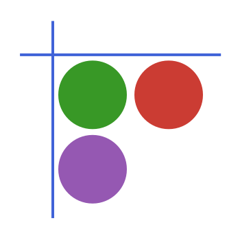

⚙️ Reading and writing
Read and write common vector formats using one API with explicit control when needed.

GeoDataFrames.jl provides geospatial I/O, metadata handling, and geometry workflows on top of ordinary DataFrames. Use Rasters.jl for raster data and GeometryOps.jl for the operation set.
Install and load:
using Pkg
Pkg.add(["GeoDataFrames"])
using GeoDataFramesWe can read a dataset by passing a filename, or an url. The source is a pinned copy of GDAL's one-point GeoJSON test dataset.
using GeoDataFrames
source = "https://raw.githubusercontent.com/OSGeo/gdal/decb67c35ec249c1bae55f53238d5a69e7eff153/autotest/ogr/data/geojson/point.geojson"
table = GeoDataFrames.read(source)
table| Row | geometry |
|---|---|
| IGeometr… | |
| 1 | Geometry: wkbPoint |
read returns an ordinary DataFrame with a geometry column, and specific metadata on the geometrycolumns and crs.
write the table to a GeoPackage:
fn = GeoDataFrames.write("test.gpkg", table)
isfile(fn)trueContinue with Installation, Quick start tutorial, and How-to guides.